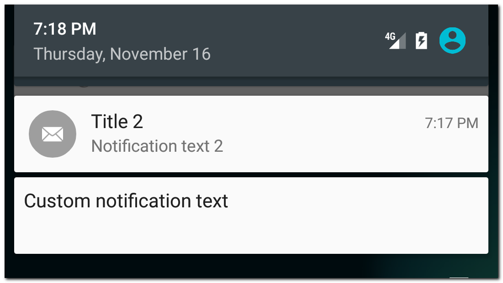
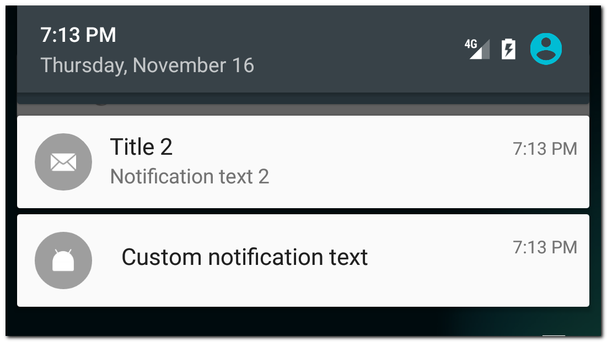
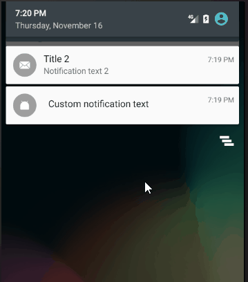

Android предоставляет нам возможность самим создать layout для уведомлений
Рассмотрим простой пример:
layout/notification.xml
<?xml version="1.0" encoding="utf-8"?>
<LinearLayout xmlns:android="http://schemas.android.com/apk/res/android"
android:id="@+id/root"
android:layout_width="match_parent"
android:layout_height="64dp"
android:orientation="horizontal">
<TextView
android:id="@+id/textView"
android:layout_width="wrap_content"
android:layout_height="wrap_content"
android:layout_marginStart="8dp"
android:layout_marginTop="8dp"
android:text="TextView"
android:textAppearance="@style/TextAppearance.Compat.Notification.Title" />
</LinearLayout>
Высота 64dp - стандартная высота уведомления.
Будем показывать только TextView. Рекомендуется использовать @style/TextAppearance.Compat.Notification.* стили, чтобы ваш текст корректно отображался на любой версии Android.
Код билдера уведомления выглядит так:
RemoteViews remoteViews = new RemoteViews(getPackageName(), R.layout.notification);
remoteViews.setTextViewText(R.id.textView, "Custom notification text");
remoteViews.setOnClickPendingIntent(R.id.root, rootPendingIntent);
NotificationCompat.Builder builder = new NotificationCompat.Builder(this)
.setSmallIcon(R.mipmap.ic_launcher)
.setContent(remoteViews);
Создаем RemoteViews из layout файла.
Методом setTextViewText помещаем текст в View c id = R.id.textView.
А методом setOnClickPendingIntent указываем PendingIntent, который будет вызван при нажатии на View с id = R.id.root. В нашем примере root - это корневой LinearLayout. Соответственно при нажатии на уведомление, будет использован этот PendingIntent, чтобы запустить Activity/Service/BroadcastReceiver.
В билдере остается необходимость указать иконку, которая будет видна в области уведомлений. А вот методы setContentTitle и setContentText не нужны. Вместо них используем setContent и передаем туда созданный RemoteViews.
В результате увидим свое уведомление

Для сравнения рядом отображено стандартное уведомление.
Есть еще один, более новый, способ создания кастомного уведомления - использование стиля DecoratedCustomViewStyle.
RemoteViews remoteViews = new RemoteViews(getPackageName(), R.layout.notification);
remoteViews.setTextViewText(R.id.textView, "Custom notification text");
remoteViews.setOnClickPendingIntent(R.id.root, rootPendingIntent);
NotificationCompat.Builder builder = new NotificationCompat.Builder(this)
.setSmallIcon(R.mipmap.ic_launcher)
.setCustomContentView(remoteViews)
.setStyle(new NotificationCompat.DecoratedCustomViewStyle());
Отличие от старого способа в том, что мы вызываем метод setCustomContentView, а не setContent, и используем стиль DecoratedCustomViewStyle.
Результат:

Обратите внимание, что в этом случае кастомизируется уже не все уведомление, а только его содержание. А остальные части уведомления, такие как иконка, время или action кнопки останутся на своих местах.
Использование DecoratedCustomViewStyle дает нам возможность кастомизировать и расширенное уведомление.
Пример
RemoteViews remoteViews = new RemoteViews(getPackageName(), R.layout.notification);
remoteViews.setTextViewText(R.id.textView, "Custom notification text");
remoteViews.setOnClickPendingIntent(R.id.root, rootPendingIntent);
RemoteViews remoteViewsExtended = new RemoteViews(getPackageName(), R.layout.extended_notification);
remoteViewsExtended.setTextViewText(R.id.textView, "Extended custom notification text");
remoteViewsExtended.setOnClickPendingIntent(R.id.root, rootPendingIntent);
NotificationCompat.Builder builder = new NotificationCompat.Builder(this)
.setSmallIcon(R.mipmap.ic_launcher)
.setCustomContentView(remoteViews)
.setCustomBigContentView(remoteViewsExtended)
.setStyle(new NotificationCompat.DecoratedCustomViewStyle());
Здесь мы кастомизируем и обычный вид уведомления (setCustomContentView) и расширенный (setCustomBigContentView).
Результат:

Высота layout расширенного уведомления должна быть не больше 256dp.